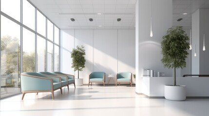

+ New Note
Good Morning, Julian.
Take a breath. What's on your mind today?
Creative Work
. 2 hours ago
The Philosophy of Quiet Productivity
In a world that never stops shouting, there is a profound power in finding silence. This morning I'm reflecting on how we can build tools that don't demand attention, but rather reward it.
#mindfulness
#design-ethics
Ideas
📍
Morning Ritual Ideas
- Cold water therapy
- 5 minutes of focused breathing
- Tea ceremony without screens
#wellness

Work
Office Redesign Notes
Need to prioritize ergonomic comfort and natural light diffusion...
Personal
Weekend Grocery List
- • Fresh ginger & mint
- • Organic honey
Work
Mar 12
Project Alpha Review
The feedback from the initial user group was surprisingly positive regarding the soft-focus UI.